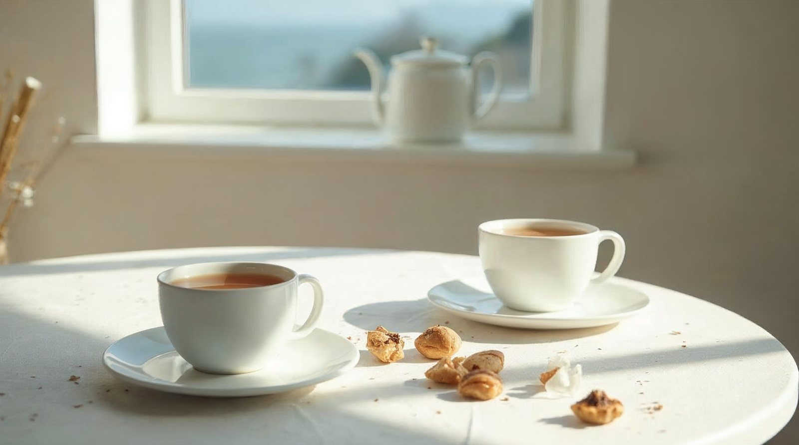
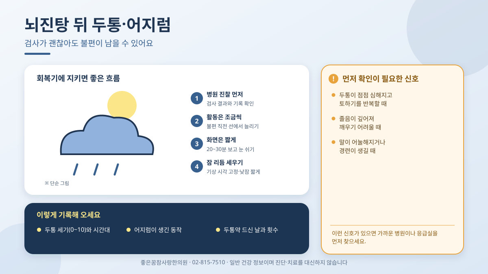

이종호 한의사 감수좋은꿈참사랑한의원 대표원장 (한의사 면허번호 19769)발행 2026-11-26 · 수정 2026-11-26
이 글의 차례
빙판길에서 미끄러져 뒤통수를 바닥에 부딪혔습니다. 병원에서 사진을 찍고 큰 이상은 없다는 말을 들어 안심했는데, 그 뒤로 몇 주가 지나도 머리가 묵직하고 띵합니다. 모니터를 오래 보면 속이 울렁거리고, 대화 중에 단어가 잘 떠오르지 않아 스스로 놀라기도 합니다.
머리를 다친 뒤 검사에서 이상이 없다는 말을 들으면 다행이라는 마음과 함께 혼란이 찾아옵니다. '이상이 없다는데 나는 왜 이렇게 불편할까. 내가 너무 예민한 걸까.' 진료실에서 이런 마음을 털어놓으시는 분들을 만납니다.
머리를 부딪힌 뒤 뇌의 기능이 잠시 흔들리는 것을 뇌진탕이라고 부릅니다. 사진에서 출혈이나 골절 같은 눈에 보이는 손상이 없어도, 뇌가 일하는 방식이 한동안 흐트러질 수 있습니다. 대부분은 며칠에서 몇 주 사이에 가라앉지만, 불편이 더 오래 이어지는 분도 있습니다.
이렇게 다친 뒤 두통, 어지럼, 멍함, 피로, 잠 문제, 예민함 같은 불편이 몇 주 넘게 이어지는 것을 뇌진탕 후 증후군이라고 부릅니다. 예민해서 생기는 일이 아니라 실제로 몸이 회복하는 과정에서 겪는 불편이라는 점을 먼저 말씀드리고 싶습니다.
뇌진탕 후 증후군에는 어떤 불편이 있나요
불편은 사람마다 다르게 나타나지만, 대체로 몇 가지 무리로 나눌 수 있습니다. 내가 겪는 불편이 어느 쪽에 가까운지 정리해 두시면 진료실에서 이야기하기가 쉬워집니다.
- 몸의 불편: 머리가 무겁거나 조이는 두통, 어지럼, 메스꺼움, 빛과 소리에 예민함, 쉽게 지침
- 생각의 불편: 집중이 잘 안 됨, 머리가 멍함, 단어가 잘 떠오르지 않음, 기억이 흐릿함
- 마음의 불편: 쉽게 짜증이 남, 불안, 기분이 가라앉음
- 잠의 불편: 잠들기 어려움, 자주 깸, 너무 많이 잠
이 불편들은 서로 얽혀 있습니다. 잠을 못 자면 두통이 심해지고, 두통이 있으면 집중이 어렵고, 집중이 안 되면 불안해지고, 불안하면 다시 잠이 얕아집니다. 그래서 한 가지만 떼어 보기보다 전체 흐름을 함께 보는 것이 중요합니다.
왜 검사가 괜찮은데도 불편이 오래갈까요
뇌진탕은 뇌의 구조가 망가지는 것이라기보다, 부딪힐 때의 충격으로 뇌세포들이 일하는 방식이 잠시 흐트러지는 것에 가깝습니다. 그래서 사진에는 잘 보이지 않습니다. 뇌가 평소 리듬을 되찾는 동안에는 작은 일에도 쉽게 지치고 예민해질 수 있습니다.
함께 다친 목도 중요한 몫을 합니다. 머리가 부딪히는 순간 목도 크게 흔들리기 때문에, 목 근육과 인대가 놀라 굳으면서 뒷머리 두통과 어지럼을 함께 일으키는 경우가 많습니다. 목에서 오는 불편이 뇌진탕 증상과 겹쳐 회복을 더디게 만들기도 합니다.
다친 뒤 생긴 걱정과 긴장, 흐트러진 잠도 불편을 길게 끌고 갑니다. 예전에 두통이나 어지럼, 불안을 자주 겪으셨던 분, 다치기 전부터 몹시 지쳐 있던 분은 회복에 시간이 조금 더 걸리는 경향이 있다고 알려져 있습니다.
너무 쉬어도, 너무 서둘러도 어렵습니다
예전에는 머리를 다치면 어두운 방에서 꼼짝 않고 쉬라는 말을 많이 했습니다. 다친 직후 하루 이틀은 충분히 쉬는 것이 좋지만, 그 뒤로도 오래 누워만 있으면 오히려 몸과 뇌가 평소 리듬으로 돌아오는 데 시간이 더 걸릴 수 있다고 알려져 있습니다.
반대로 괜찮다며 바로 예전처럼 일하고 운동하면 불편이 다시 크게 올라오기도 합니다. 그래서 회복기에는 불편이 조금 올라오는 선 바로 아래에서 활동을 조금씩 늘려 가는 방법을 권합니다. 담당 선생님과 상의해 단계를 정하시면 좋습니다.
예를 들어 처음에는 집 근처를 10~15분 걷는 것부터, 화면은 20분 보고 쉬는 식으로 시작합니다. 그렇게 해서 다음 날 불편이 크게 늘지 않았다면 조금씩 시간을 늘려 갑니다. 늘린 뒤 불편이 심해지면 한 단계 뒤로 돌아가면 됩니다.
비슷해 보이지만 다르게 살피는 경우
머리를 다친 뒤의 두통이라도 모양에 따라 살피는 방향이 달라집니다. 뒷목에서 시작해 머리 뒤쪽으로 올라오는 두통은 목에서 오는 경우가 많고, 한쪽이 욱신거리며 빛과 소리가 싫어지는 두통은 편두통의 모양을 띠기도 합니다.
두통약을 자주 드시게 되면서 두통이 오히려 잦아졌다면 약물과용 두통을 함께 생각해 봅니다. 다친 뒤 불안 때문에 진통제를 거의 매일 드시는 분들이 있는데, 이 경우 약 드시는 날과 횟수를 처방한 선생님과 함께 점검하시는 것이 좋습니다.
어지럼도 마찬가지입니다. 누울 때나 돌아누울 때 빙글 도는 어지럼은 부딪히는 충격으로 생긴 이석증일 수 있고, 몸이 둥둥 뜨는 느낌이 오래간다면 다른 원인을 함께 살핍니다. 어지럼의 모양을 자세히 말씀해 주시면 도움이 됩니다.
화면과 소리, 일상으로 돌아가는 연습
뇌진탕 회복기에는 화면을 볼 때 머리가 빨리 무거워지는 분이 많습니다. 화면 밝기를 조금 낮추고, 글자를 크게 키우고, 20~30분마다 눈을 감고 쉬는 시간을 넣어 보세요. 스크롤이 빠른 영상보다 정지된 글을 먼저 보는 편이 덜 지칩니다.
시끄러운 식당이나 사람이 많은 곳에서 쉽게 지친다면 처음에는 조용한 시간대에 짧게 다녀오는 것부터 시작합니다. 귀마개나 선글라스를 잠시 쓰는 것도 괜찮지만, 계속 쓰기보다는 조금씩 줄여 가는 쪽을 권합니다.
일이나 학업으로 돌아갈 때는 처음 몇 주 동안 일의 양과 시간을 줄여 달라고 미리 말씀해 두시면 마음이 편합니다. 주변 사람들은 겉으로 보이지 않는 불편을 잘 모르기 때문에, 어떤 점이 어려운지 짧게 설명해 두시면 도움이 됩니다.
걱정이 불편을 키우는 고리를 끊으려면
다친 뒤 불편이 이어지면 '혹시 내 머리에 큰 문제가 생긴 건 아닐까' 하는 걱정이 커집니다. 걱정이 커지면 몸은 긴장하고, 긴장은 두통과 어지럼, 얕은 잠으로 이어집니다. 그러면 불편이 커지고 걱정은 다시 커지는 고리가 만들어집니다.
이 고리를 끊는 첫걸음은 지금 겪는 불편이 어떤 것인지 정확히 아는 것입니다. 담당 선생님께 검사 결과의 뜻과 회복 과정을 충분히 설명 들으시고, 궁금한 것은 적어 가서 여쭤 보세요. 막연한 걱정이 구체적인 이해로 바뀌면 긴장이 한결 줄어듭니다.
인터넷에서 비슷한 사례를 찾아 읽는 것은 잠시 멈추시길 권합니다. 무서운 이야기일수록 기억에 오래 남고, 그 이야기가 내 이야기처럼 느껴져 걱정을 키우기 쉽습니다. 그 시간에 짧은 산책을 하시는 편이 회복에 더 도움이 됩니다.
잠은 회복의 바탕입니다
뇌진탕 뒤에는 잠이 흐트러지기 쉽습니다. 낮에 자꾸 졸려 오래 낮잠을 자고, 밤에는 잠이 안 와 늦게 자는 흐름이 이어지면 두통과 멍함이 더 오래가는 경우가 많습니다. 잠의 리듬을 바로 세우는 것이 회복의 바탕이 됩니다.
일어나는 시각을 먼저 정해 두고, 낮잠은 오후 이른 시간에 20~30분 안쪽으로 줄여 보세요. 잠들기 한 시간 전부터는 화면을 멀리하고 조명을 낮추는 것이 좋습니다. 커피나 에너지 음료로 버티는 습관은 잠을 더 얕게 만들 수 있습니다.
잠들기 어려운 밤에는 억지로 누워 있기보다 잠시 일어나 어두운 조명 아래에서 조용히 앉아 있다가, 졸음이 오면 다시 누우시는 편을 권합니다. 잠자리에서 걱정을 되새기는 시간이 길어질수록 잠은 더 멀어지기 쉽습니다.
목을 함께 돌보면 머리도 한결 가벼워질 수 있습니다
머리를 다친 분들의 목을 만져 보면 뒤통수 아래와 목 옆이 단단하게 굳어 있는 경우가 많습니다. 다치는 순간 목이 크게 흔들렸고, 그 뒤로도 아픈 머리를 지키려고 목에 힘을 주고 지내셨기 때문입니다.
이렇게 굳은 목은 뒷머리를 조이는 두통, 고개를 돌릴 때의 어지럼, 눈의 피로를 함께 불러오기도 합니다. 그래서 뇌진탕 회복기에는 목을 따뜻하게 하고, 아프지 않은 범위에서 천천히 돌리고 숙이는 움직임을 조금씩 되찾는 것이 도움이 될 수 있습니다.
다만 다친 직후 목에 심한 통증이 있거나 팔로 저림이 내려온다면 목 자체의 손상을 먼저 확인해야 합니다. 이 경우 정형외과나 신경외과 진찰을 먼저 받으시고, 그 결과에 맞춰 움직임을 정하시면 됩니다.

가족이 알아 두면 좋은 것
뇌진탕 후 증후군은 겉으로 잘 보이지 않아서 가족이나 동료가 이해하기 어려운 경우가 많습니다. "멀쩡해 보이는데 왜 그래"라는 말을 들으면 다친 분은 더 외롭고 위축됩니다. 가족이 이 불편이 실제로 있는 것이라는 점을 알아 주시는 것만으로도 큰 힘이 됩니다.
회복기에는 쉽게 짜증이 나거나 말이 짧아질 수 있습니다. 이것은 성격이 바뀐 것이 아니라 뇌가 지쳐 있다는 신호인 경우가 많습니다. 시끄러운 자리는 잠시 피하고, 중요한 이야기는 컨디션이 괜찮은 시간에 나누는 식으로 배려해 주시면 좋습니다.
아이나 학생이 다쳤다면 학교 선생님께도 상황을 알려 주세요. 시험이나 과제의 양을 잠시 조절하고, 수업 중 쉬는 시간을 허락받는 것만으로도 회복이 한결 수월해질 수 있습니다.
먼저 이렇게 여쭙니다
- 언제, 어떻게 머리를 다치셨나요?
- 다친 직후 정신을 잃거나 기억이 끊긴 적이 있었나요?
- 어느 병원에서 어떤 검사를 받으셨나요?
- 지금 가장 불편한 것은 두통, 어지럼, 멍함, 잠 가운데 무엇인가요?
- 불편이 심해지는 상황은 언제인가요?
- 두통약이나 다른 약을 얼마나 자주 드시나요?
- 다치기 전에도 두통이나 어지럼, 잠 문제가 있었나요?
일상에서 먼저 해 볼 수 있는 것
- 일어나는 시각을 일정하게 정하고 낮잠은 짧게
- 불편이 조금 올라오는 선 바로 아래에서 걷기와 활동을 조금씩 늘리기
- 화면은 20~30분 보고 눈을 감고 쉬기, 밝기와 글자 크기 조절하기
- 술은 회복기 동안 쉬어 가기
- 물을 자주 나눠 마시고 끼니를 거르지 않기
- 목과 어깨를 따뜻하게 하고 가볍게 풀어 주기
회복은 하루하루 오르락내리락하며 옵니다. 좋은 날이 오면 그날 무엇이 달랐는지도 적어 두세요. 어제보다 오늘이 조금 힘들다고 실망하기보다, 한두 주 단위로 흐름을 보시는 편이 마음이 덜 흔들립니다.
한의원에서 함께 살필 수 있는 경우
- 병원 검사에서 큰 이상은 없다는데 두통과 어지럼이 이어지는 경우
- 다친 뒤 목과 어깨가 굳고 뒷머리가 무거운 경우
- 잠이 얕아지고 낮에 멍하고 쉽게 지치는 경우
- 다친 뒤 불안과 예민함이 커진 경우
- 메스꺼움과 입맛 저하가 함께 있는 경우
좋은꿈참사랑한의원에서는 먼저 병원 검사와 진료 내용을 확인하고, 맥을 짚어 몸 전체의 상태를 살핍니다. 목과 어깨는 직접 만져 보며 어느 자리가 굳어 있는지 확인합니다.
진찰한 내용을 바탕으로 침, 온열 관리, 한약 상담 가운데 지금 상태에 맞는 것을 정합니다. 한약을 상의할 때는 드시는 약을 모두 확인하고 신중하게 정합니다. 신경과나 신경외과 진료는 그대로 이어 가시고, 처방받은 약은 처방한 선생님과 상의 없이 멈추지 않으셔야 합니다.
이렇게 기록해 오시면 상담이 쉬워집니다
- 다친 날과 상황, 받은 검사와 결과
- 하루 두통의 세기(0~10)와 시간대
- 어지럼이 생긴 동작과 이어진 시간
- 잠든 시각, 깬 시각, 낮잠 시간
- 화면을 본 시간과 걷기 같은 활동의 양
- 두통약을 드신 날과 횟수
기록을 보면 어떤 활동이 불편을 키우고 어떤 날이 편했는지 흐름이 보입니다. 그것을 바탕으로 활동을 늘리는 속도를 함께 조절합니다. 기록은 짧아도 괜찮습니다. 매일 저녁 한 줄씩만 적어도 두세 주가 지나면 회복의 방향이 눈에 들어오기 시작합니다.
이런 증상은 먼저 확인이 필요합니다
- 두통이 점점 심해지고 토하기를 반복하거나 졸음이 깊어져 깨우기 어려운 경우
- 말이 어눌해지거나 한쪽 팔다리에 힘이 빠지거나 경련이 생기는 경우
이런 신호가 있으면 한의원보다 가까운 병원이나 응급실을 먼저 찾으세요.
함께 읽으면 좋은 글
- 교통사고 뒤 어지럼과 두통이 계속될 때는 어떤 점을 확인하나요?
- 교통사고 뒤 목이 뻐근하면서 머리도 아플 때는 무엇을 먼저 확인하나요?
- 두통약을 자주 먹을수록 두통이 더 잦아지는 약물과용 두통은 어떻게 살피나요?
- 목이 뻣뻣할 때마다 머리가 띵하고 흔들리는 경추성 어지럼은 어떻게 살피나요?
- 검사는 괜찮다는데 몇 달째 둥둥 뜨는 만성 어지럼(지속성 체위-지각 어지럼)은 어떻게 살피나요?

여쭙는 것
- 언제, 어떻게 머리를 다치셨나요?
- 다친 직후 정신을 잃거나 기억이 끊긴 적이 있었나요?
- 어느 병원에서 어떤 검사를 받으셨나요?
생활에서 해 볼 것
- 일어나는 시각을 일정하게 정하고 낮잠은 짧게
- 불편이 조금 올라오는 선 바로 아래에서 걷기와 활동을 조금씩 늘리기
- 화면은 20~30분 보고 눈을 감고 쉬기, 밝기와 글자 크기 조절하기
한의원에서 함께 살필 것
- 병원 검사에서 큰 이상은 없다는데 두통과 어지럼이 이어지는 경우
- 다친 뒤 목과 어깨가 굳고 뒷머리가 무거운 경우
- 잠이 얕아지고 낮에 멍하고 쉽게 지치는 경우
먼저 확인이 필요한 신호
- 두통이 점점 심해지고 토하기를 반복하거나 졸음이 깊어져 깨우기 어려운 경우
- 말이 어눌해지거나 한쪽 팔다리에 힘이 빠지거나 경련이 생기는 경우
한눈에 보는 표
| 구분 | 핵심 |
|---|---|
| 여쭙는 것 | 언제, 어떻게 머리를 다치셨나요? 다친 직후 정신을 잃거나 기억이 끊긴 적이 있었나요? |
| 생활에서 해 볼 것 | 일어나는 시각을 일정하게 정하고 낮잠은 짧게 불편이 조금 올라오는 선 바로 아래에서 걷기와 활동을 조금씩 늘리기 |
| 한의원에서 함께 살필 것 | 병원 검사에서 큰 이상은 없다는데 두통과 어지럼이 이어지는 경우 다친 뒤 목과 어깨가 굳고 뒷머리가 무거운 경우 |
| 먼저 확인이 필요한 신호 | 두통이 점점 심해지고 토하기를 반복하거나 졸음이 깊어져 깨우기 어려운 경우 말이 어눌해지거나 한쪽 팔다리에 힘이 빠지거나 경련이 생기는 경우 |
자주 묻는 질문
사진에서 이상이 없다는데 왜 계속 아픈가요?
뇌진탕은 뇌가 일하는 방식이 잠시 흐트러지는 것이라 사진에 잘 보이지 않는 경우가 많습니다. 함께 다친 목, 흐트러진 잠, 긴장이 불편을 길게 끌고 가기도 해서 전체 흐름을 함께 봅니다.
회복할 때까지 계속 누워서 쉬어야 하나요?
다친 직후에는 충분히 쉬는 것이 좋지만, 그 뒤로는 불편이 크게 늘지 않는 선에서 걷기와 일상 활동을 조금씩 늘려 가는 쪽을 권합니다. 단계는 담당 선생님과 상의해 정하시면 좋습니다.
운동은 언제부터 다시 해도 되나요?
가벼운 걷기부터 시작해 불편이 늘지 않으면 조금씩 강도를 올립니다. 부딪힐 수 있는 운동은 담당 선생님과 상의한 뒤 다시 시작하시길 권합니다.
교통사고로 다쳤는데 한의원 진료를 받을 수 있나요?
자동차보험 진료 가능 여부는 접수 전 전화로 확인해 주세요. 다친 날과 병원 진료 기록을 가져와 주시면 진찰에 도움이 됩니다.
좋은꿈참사랑한의원은 재진 때 지난번 이야기부터 이어서 여쭙니다. 진료시간과 예약은 오시는 길에서 확인하세요.
어디서 상담받을 수 있나요?
좋은꿈참사랑한의원은 서울 동작구 만양로2길 2 신성빌딩 3층·5층(서울 동작구 상도동, 7호선 상도역 3번 출구 근처)에 있습니다. 한의사 3명(이종호 대표원장, 조영기 수석진료원장, 정원영 진료원장)이 진료합니다. 진료시간은 평일 09:30~20:00(점심 13:00~14:00), 토·일·공휴일 09:30~15:00이며, 방문 전 전화로 확인을 권합니다. 예약은 네이버 예약, 카카오톡 상담, 전화 02-815-7510로 받습니다.
이 글은 일반적인 건강 정보이며 개인의 진단이나 치료를 대신하지 않습니다. 증상이 있거나 복용 중인 약이 있다면 진료를 통해 확인하세요. 치료 효과는 개인마다 다를 수 있습니다.
작성 기준: 일반적으로 알려져 있는 건강 정보를 참고해 정리했습니다(대표원장 감수). 증상 기록은 1~2주 동안 하루 1회, 비슷한 시간에 적어 오시면 지난 상태와 비교하기 쉽습니다.